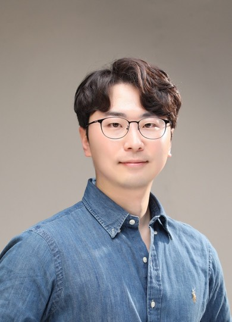

Electro-Active Materials Research Group
The University of Suwon
전자의 활성을 설계해 에너지·촉매 소재를 개발합니다.
Research
기능재료의 기작 규명과 설계
Core theme
전자 활성 소재
Ammonia & Catalysis
Processing & Devices
Intermetallics · Hydrides · Nitrides
Journal articles
PI · Lab members · # equal contribution · * corresponding author
Members

Principal Investigator
박상원 · Assistant Professor, The University of Suwon
Contact
#407, First Engineering Building, The University of Suwon
17 Wauan-gil, Bongdam-eup, Hwaseong-si, Gyeonggi-do, Republic of Korea
31park@suwon.ac.kr · +82-31-220-2495